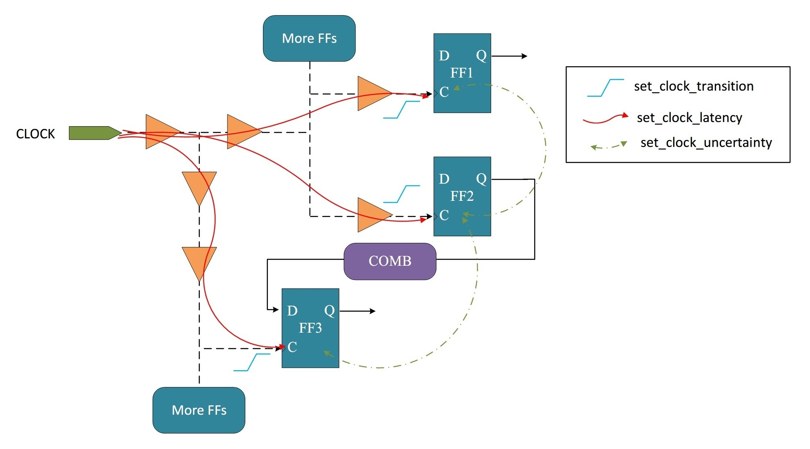

キーワード：クロック源、クロックスキュー、クロックジッタ、クロック遷移時間、クロックレイテンシ、クロックツリー、両エッジクロック
ほぼすべての複雑なデジタル設計にはクロックが欠かせません。クロックはすべての順序論理が成立する基礎でもあります。前述のセットアップ時間とホールド時間の説明では、クロックスキューの概念にも触れました。以下では、デジタル設計をより良く行うために、クロックに関する知識をまとめます。
クロック源
デジタル設計モジュール内のクロック源の位置に応じて、クロック源は外部クロック源と内部クロック源に分類できます。
外部クロック源：
RC/LC発振回路：正帰還または負帰還回路を利用して周期的に変化するクロック信号を生成します。この種のクロック源は回路が簡単で、周波数変化範囲が広いですが、動作周波数が低く、安定度は高くありません。
パッシブ/アクティブ水晶発振器：水晶の圧電効果（圧力と電気信号は相互に変換できる）を利用して共振信号を生成します。この種のクロック源は周波数精度が高く、安定性が良く、ノイズが低く、温度ドリフトが小さいです。アクティブ発振器には、多くの場合、電圧制御や温度補償が追加され、クロックの位相と周波数はどちらも優れた特性を持ちます。ただし、回路実装は比較的複雑で、周波数帯域は狭く、周波数は基本的に調整できません。

特定の回路をデバッグする際には、組み立てた特定の回路（例えばシュミットトリガ）や信号発生器のデバイスによって生成されるクロック源を使用することもよくあります。
内部クロック源：
位相同期ループ（PLL、Phase Locked Loop）：
外部から入力される基準信号を利用してループ内部の発振信号の周波数と位相を制御し、出力信号の周波数が入力信号の周波数に自動追従することを実現します。フィードバック経路を介して信号をより高い固定周波数に逓倍します。
一般的な水晶発振器は、プロセスとコストの理由から高い周波数を実現できませんが、PLL回路を使用することで安定した高周波のクロックを実現できます。PLLを設計モジュールの内部に集積することで、デジタル回路が良好な遅延と安定性を持つことを保証できます。
クロック分周：一部のモジュールは動作周波数がシステムクロック周波数より低い場合があります。その場合は、システムクロックを適切に分周して、より低い周波数のクロックを得る必要があります。
always文ブロック内でカウントしてクロック信号を出力する方法は、分周器でよく使われる方法です。任意の分周比の実装ロジックについては、次の節「5.3 クロック分周」を参照してください。
クロック切り替え：システムや一部のモジュールの動作周波数は、特定の状況で変わることがあります。例えば、低消費電力モードでは周波数を下げる必要があり、計算能力を高める必要がある場合は周波数を上げます。このとき、システムは複数のクロック源を持つことが多く、必要に応じてクロックの切り替えを行えるようにしています。
クロック切り替えロジックを最適化しない場合、切り替えの過渡的な時間内に、高い確率でスパイク状のパルス妨害が発生し、回路に悪影響を及ぼします。安全な切り替えロジックについては、後の章「5.4 クロック切り替え」を参照してください。
デジタルシステムでは、外部水晶発振器の入力と内部PLLによる逓倍を採用することがよくあります。その後、設計要件に応じてクロック分周やクロック切り替えを行います。
クロック特性
シミュレーション時、すべての同期クロックは理想的です。つまり、クロックの反転は瞬間的に完了し、モジュール間のクロックエッジは揃っており、遅延もジッタもありません。実際の回路では、クロックは伝送や反転の際に遅延が生じます。完璧なデジタル設計であっても、これらの不完全なクロック特性を考慮する必要があります。考慮しないと、設計のタイミング要件を満たさない状況が発生する可能性があります。
以下で、クロックのいくつかの特性について簡単に説明します。
クロックスキュー（skew）
配線網の遅延により、クロック信号がフリップフロップのポートに到達するとき、異なるフリップフロップのポート間でクロックエッジが揃っていることを保証できません。つまり、異なるフリップフロップのポート間でクロック位相に差が生じます。この差をクロックスキューと呼びます。模式図は以下のとおりです。

一般的に、クロックスキューはクロック周波数とは直接の関係はなく、配線長、負荷容量、負荷数などの要因に関係します。
クロックジッタ（jitter）
理想的なクロックエッジと比較して、実際のクロックに存在する、時間とともに蓄積されず、時には進み、時には遅れるずれをクロックジッタと呼びます。ジッタ周波数とジッタ振幅を用いてクロックジッタを定量的に記述できます。デジタル設計では、クロックジッタは常に時間で記述されます。模式図は以下のとおりです。

クロックジッタは、ランダムジッタと固定ジッタに分類できます。
ランダムジッタの発生源は、熱雑音、半導体プロセスなどです。
固定ジッタの発生源は、スイッチング電源、電磁干渉、その他の不合理な配置配線などです。
合成ツール Design Compiler では、クロックのスキューとジッタは、不確かさ（uncertainty）として統一的に表されます。
遷移時間（transition）
クロックが立ち上がりエッジから立ち下がりエッジへ、または立ち下がりエッジから立ち上がりエッジへ遷移するとき、レベル遷移は「垂直に上下する」ように時間を必要とせず行われるのではなく、「傾斜状」に遷移を完了するための遷移時間が必要です。この遷移時間をクロックの遷移時間と呼びます。模式図は以下のとおりです。

遷移時間の大きさは、セルライブラリのプロセス、容量負荷などに関係します。
クロックレイテンシ（latency）
クロックがクロック源（例えば、水晶発振器、PLL、または分周器の出力端）からフリップフロップのポートに到達するまでの遅延時間を、クロックレイテンシと呼びます。クロックレイテンシには、クロックソースレイテンシ（source latency）とクロックネットワークレイテンシ（network latency）が含まれます。下図のとおりです。

クロックソースレイテンシは、クロック信号が実際のクロック原点から設計モジュールのクロック定義点までの伝送時間です。上図では 3ns です。
クロックネットワークレイテンシは、設計モジュールのクロック定義点からモジュール内のフリップフロップのクロック端子までの伝送時間であり、伝送経路にはバッファ（buffer）を経由する場合があります。上図では 1ns です。
クロックソースレイテンシ（source latency）は、設計モジュール内のすべてのフリップフロップに共通する遅延であるため、クロックスキュー（skew）には影響しません。
クロックツリー
デジタル設計では、各モジュールは同期クロック回路を使用する必要があります。同期回路では、同じクロック信号によって駆動されるフリップフロップがまとまって1つのクロックドメインを構成します。理想的な回路では、クロック信号は同じクロックドメイン内のすべてのフリップフロップのクロック端子に同時に到達します。しかし実際には、さまざまな遅延が存在するため、このような遅延のないクロック特性を実現することは困難です。さらに、クロック信号の駆動能力には限界があるため、多数のフリップフロップを含むクロックドメインに対して、単独で有効なファンアウトを提供することは困難です。クロック遅延と駆動の問題を解決するには、クロックツリーシステムを採用してクロック信号を管理し、良好なタイミングと駆動能力を確保する必要があります。
クロックツリーは、多数のバッファセル（buffer cell）をバランスよく配置して構築されるネットワーク構造です。通常、1つのクロック源点から、段階的にバッファセルを配置して構築されます。clock buffer（図中のオレンジ色の三角形モジュール）を追加した実際のクロックツリー構造は、以下のとおりです。

青色の立ち上がりエッジ記号はクロックの遷移時間（transition）を表し、赤色の実線はクロックレイテンシ（latency）を表し、network delay と source latency を含みます。緑色の点線はクロックの不確かさ（uncertainty）を表し、クロックスキュー（skew）とクロックジッタ（jitter）を含みます。クロックツリーは、クロック信号が各フリップフロップに到達するまでの時間を短縮するためのものではなく、各フリップフロップ間の到達時間の差を小さくするためのものです。通常、バックエンド設計者が clock buffer を挿入してクロックツリーの設計を行います。フロントエンド設計者は、クロックプランとデジタルロジックの機能的正しさを保証する必要があることが多いです。
その他のクロック分類：
同期クロック、非同期クロック
「4.1 同期と非同期」に詳細な説明があります。クロックが同源であり、整数倍の関係を満たす場合、一般的にクロックは同期していると見なせます。デジタル設計における同期クロックの定義は比較的広範です。同じクロックドメイン内のロジックは同期処理を行う必要はありません。
以下では、同期回路の観点から同期クロックの概念を理解します。
同期回路は、順序回路と組み合わせ論理回路によって構成される回路です。同期回路の特徴は、各フリップフロップのクロック端子がすべて接続され、システムクロック端子に接続されていることです。クロックパルスが到来したときにのみ、回路の状態が変化します。変化した状態は、次のクロックパルスが到来するまで保持されます。この間、外部入力 x が変化するかどうかに関わらず、状態表の各状態は安定しています。
ゲーテッドクロック
ゲーテッドクロックの基本原理：イネーブル信号が有効なとき、クロックを開きます。イネーブル信号が無効なとき、クロックを閉じます。

ゲーテッドクロックは、動作クロックを適切なタイミングで停止できるため、低消費電力設計で広く応用されています。ゲーテッドクロックの最も簡単な実装ロジックは、イネーブル信号をクロック信号と直接「AND」演算することですが、これは安全ではなく、グリッチ現象が発生しやすいです。詳細なゲーテッドクロックの紹介は「6.4 RTLレベル低消費電力設計（下）」を参照してください。
両エッジクロック
一部のモジュールは、クロックの立ち上がりエッジと立ち下がりエッジの両方でデータ転送を行い、速度を2倍にする効果を達成できます。
DDR（Double Data Rate）SDRAM は、両エッジでデータ転送を行う典型的な例です。
典型的なDDRデータ転送の模式図は以下のとおりです。

以下では、クロックの両エッジでデータを転送する動作について、簡単なシミュレーションを行います。
基本的な設計方針は、クロックの両エッジでデータを読み取り、次にクロックと逆相のチップセレクト信号を用いてデータを選択して出力することで、クロックの両エッジでのデータ転送を実現します。
Verilog コードの記述は以下のとおりです。
例
input rstn ,
input clk,
input csn,
input [7:0] din,
input din_en,
output [7:0] dout,
output dout_en);
//capture at posedge
reg [7:0] datap_r ;
reg datap_en_r ;
always @(posedge clk or negedge rstn) begin
if (!rstn) begin
datap_r <= 'b0 ;
datap_en_r <= 1'b0 ;
end
else if (din_en) begin
datap_r <= din ;
datap_en_r <= 1'b1 ;
end
else begin
datap_en_r <= 1'b0 ;
end
end
//capture at negedge
reg [7:0] datan_r ;
reg datan_en_r ;
always @(negedge clk or negedge rstn) begin
if (!rstn) begin
datan_r <= 'b0 ;
datan_en_r <= 1'b0 ;
end
else if (din_en) begin
datan_r <= din ;
datan_en_r <= 1'b1 ;
end
else begin
datan_en_r <= 1'b0 ;
end
end
assign dout = !csn ? datap_r : datan_r ;
assign dout_en = datan_en_r | datap_en_r ;
endmodule
testbench の記述は以下のとおりです。ここで、両エッジデータ転送モジュールのクロック周波数は 100MHz ですが、入力データレートは 200MHz です。
例
module test ;
reg clk_100mhz, clk_200mhz ;
reg rstn ;
reg csn ;
reg [7:0] din ;
reg din_en ;
wire [7:0] dout ;
wire dout_en ;
always #(2.5) clk_200mhz = ~clk_200mhz ;
always @(posedge clk_200mhz)
clk_100mhz = ~clk_100mhz ;
initial begin
clk_100mhz = 0 ;
clk_200mhz = 0 ;
rstn = 0 ;
din = 0 ;
din_en = 0 ;
csn = 0 ;
//start work
#11 rstn = 1 ;
@(negedge clk_100mhz) ;
din_en = 1 ;
#0.2 ;
csn = 1 ; //csn=1 のとき、立ち下がりエッジで取得したデータを出力
//generate csn
forever begin
@(posedge clk_100mhz) ;
#0.2 ; //少し遅延を追加してデータ収集を確実にする
csn = 0 ; //csn=0 のとき立ち上がりエッジで取得したデータを出力
@(negedge clk_100mhz) ;
#0.2 ;
csn = 1 ; //csn=1 のとき立ち下がりエッジで取得したデータを出力
end
end
always @(negedge clk_200mhz) begin
din <= {$random()} % 8'hFF ; //転送用のランダムデータを生成
end
double_rate u_double_rate(
.rstn (rstn),
.clk (clk_100mhz),
.csn (csn),
.din (din),
.din_en (din_en),
.dout (dout),
.dout_en (dout_en));
initial begin
forever begin
#100;
if ($time >= 10000) $finish ;
end
end
endmodule // test
最初のいくつかのデータのシミュレーション結果は以下のとおりです。
図からわかるように、データ転送は正常であり、速度はクロック周波数の2倍です。

今回はクロックの両エッジでデータを転送する単純なシミュレーションを行っただけで、DDRの動作原理をシミュレーションするものではありません。DDRの2倍データレート転送の動作原理は、今回のシミュレーションよりもはるかに複雑です。
ただし、一般的には両エッジのクロックロジックを使用することは推奨されません。主な理由は以下のとおりです。
alwaysブロック内では、立ち上がりエッジと立ち下がりエッジを同時に感応リストとして使用できず、2つのalwaysブロックで同じ変数に代入することもできません。例えば、次の記述は誤りです。RTLコンパイルがエラーを報告しない可能性がありますが、実際の回路に合成することもできません。これにより、信号間の通信が困難になります。
always @(posedge clk or negedge clk) begin
データ転送速度はデータクロック周波数の2倍です。クロックの立ち上がりエッジと立ち下がりエッジのロジックを使用してRTLモデリングを行う場合、クロックと一致する速度で反転するチップセレクト信号も必要です。チップセレクト信号を使用しない場合は、モジュール内にデータクロック周波数の2倍の同一ソースのクロック信号を導入して、データを正しく選択できるようにする必要があります。
両エッジのクロックロジックを使用すると、立ち上がりエッジと立ち下がりエッジの両方に適切な制約を課す必要があります。クロック制約は複雑になり、配置配線の要件は厳しくなり、デバッグの難易度が高まります。
クロックの両エッジを使用した設計では、クロックの品質が非常に高いことが要求され、クロックツリーの設計時にも多くの要素を考慮する必要があります。
クリックしてノートを共有
<p style="font-size:14px;">ノートはこの記事の内容を拡張したものである必要があります！</p><br> <p style="font-size:12px;"><a href="../tougao.html" target="_blank">記事投稿は、こちらをクリックしてください</a></p> <p style="font-size:14px;"><a href="./runoob-user-test-intro.html" target="_blank">登録招待コードの取得方法</a></p> <h3 class="text-muted"><i class="fa fa-info-circle" aria-hidden="true"></i> ノートを共有する前に<a href=".." class="runoob-pop">ログイン</a>が必須です！</h3> <p><a href="./runoob-user-test-intro.html" target="_blank">登録招待コードの取得方法</a></p>